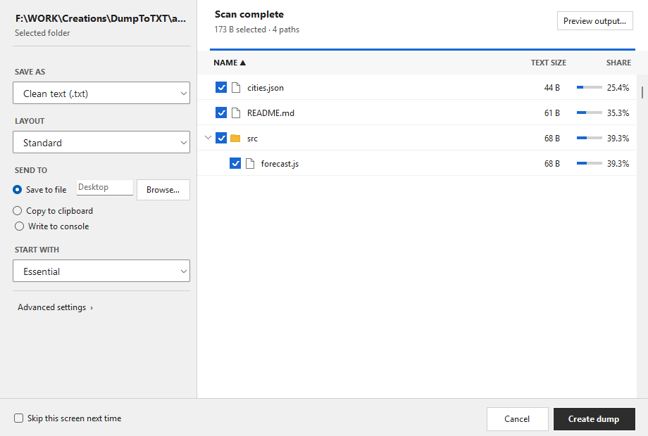
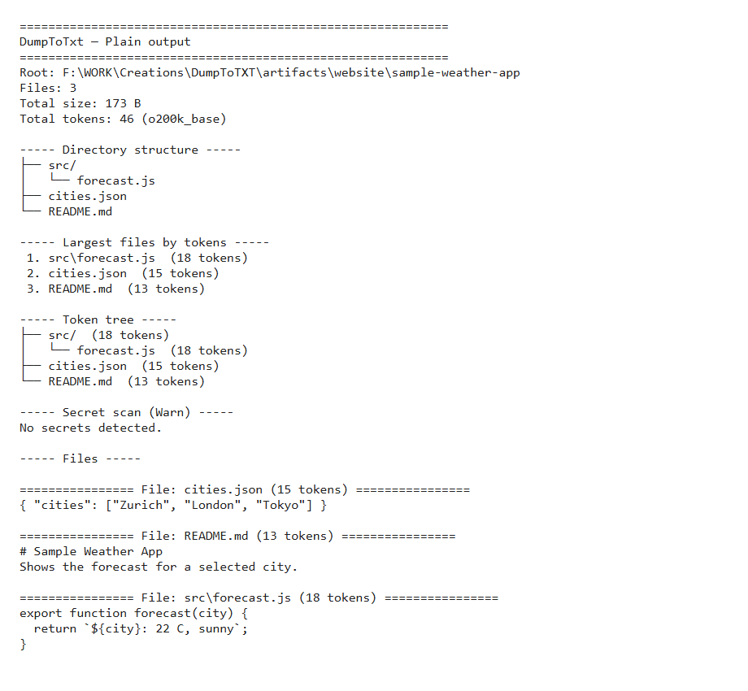

Right-click a folder.
Copy or save its contents.
-
1 Right-click in Explorer
A file, a folder, or empty space inside a folder.
Create dump with DumpToTxt
-
2 Choose what to include
Check the files you want in your dump.
See the file picker below -
3 Use it anywhere
Copy to clipboardorSave a .txt file




Sample project · Real app and generated output · TXT, Markdown, JSON, XML or Word
DumpToTxt vs. Repomix vs. Gitingest
Scroll sideways to compare all three.
| Choose by workflow | DumpToTxt | Repomix | Gitingest |
|---|---|---|---|
| A good fit for | Picking local files in a Windows app | Automating repository exports | Turning a GitHub URL into text |
| How you use it | Explorer menu, file checkboxes, preview | CLI, web, MCP, GitHub Actions | Web, CLI, Python library |
| Input | Local files and folders | Local folders and remote repositories | Repository URLs; local folders via CLI or Python |
| Output | TXT, Markdown, JSON, XML, Word | TXT, Markdown, JSON, XML | Text digest |
Sources: Repomix guide, output formats, Gitingest README. Checked October 10, 2026. DumpToTxt features shown are Full / Compact.